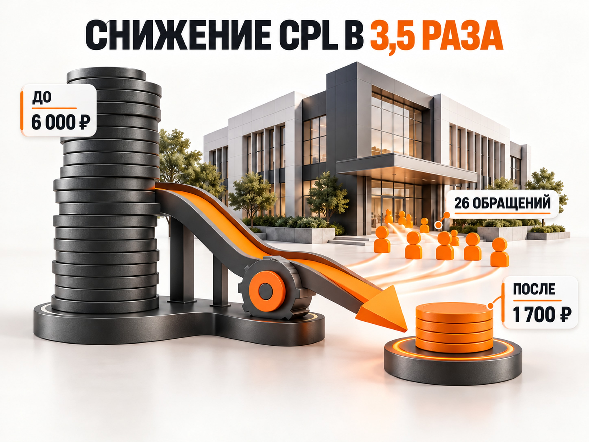

Блог о платном трафике
Яндекс Директ для коммерческой недвижимости: настройка, бюджет и заявки
Яндекс Директ для коммерческой недвижимости стоит настраивать отдельно под продажу и аренду, а внутри них учитывать тип помещения, локацию и назначение. Начинать разумно с Поиска по сформированному спросу, затем проверять РСЯ и ретаргетинг. Эффективность оценивают по стоимости квалифицированной заявки, а не только по кликам. Ниже показываю структуру рекламы, расчёт бюджета и результат собственного проекта.
Какие объекты и запросы стоит разделять
У офиса, склада, торгового помещения и готового арендного бизнеса разные покупатели и критерии выбора. Поэтому одна универсальная кампания на всю коммерческую недвижимость затрудняет управление бюджетом и оценку качества обращений.
| Сегмент | Пример запроса | Что показать на странице |
|---|---|---|
| Офисы | «аренда офиса у метро» | Адрес, класс здания, парковку, отделку и ставку |
| Торговые помещения | «купить помещение под магазин» | Первую линию, вход, витрины, мощность и цену |
| Склады | «склад в аренду с пандусом» | Подъезд, ворота, высоту потолков и логистику |
| Помещения в ЖК | «купить коммерческое помещение в ЖК» | Планировку, окружение, площадь и условия покупки |
| Готовый арендный бизнес | «купить помещение с арендатором» | Арендный поток, условия договора и риски |
Продажу и аренду лучше разделять даже для одного объекта: у инвестора цель приобрести актив, а у арендатора - разместить бизнес. Если объектов мало, достаточно разных групп внутри кампании. Если расход и статистика позволяют, важные направления можно выделять в отдельные кампании.
Как построить структуру кампаний в Яндекс Директе
Я начинаю с матрицы «сделка → объект → спрос». Например, для застройщика, продающего торговые помещения в двух ЖК, структура может быть такой:
- Поиск, продажа, ЖК № 1: запросы с названием комплекса, районом и покупкой помещения.
- Поиск, продажа, ЖК № 2: такой же набор смыслов, но другое предложение и посадочная страница.
- РСЯ: отдельный тест объявлений с фасадом, входной группой, планировками и конкретными параметрами объектов.
- Ретаргетинг: посетители карточек и люди, начавшие подбор, но не отправившие контакты.
Не нужно автоматически создавать отдельную кампанию под каждый этаж или площадь. При нескольких заявках в месяц чрезмерное дробление оставляет алгоритмам слишком мало событий. Разделяйте то, для чего действительно нужны самостоятельный бюджет, рекламное сообщение и оценка результата.
Поиск: семантика и автотаргетинг
На Поиске в первую очередь проверяю запросы, которые описывают конкретную задачу: «купить торговое помещение», «офис 100 м² аренда», «помещение под аптеку», «склад с отоплением», название ЖК плюс «коммерция». Ключевые фразы должны совпадать с типом сделки и характеристиками предложения.
После запуска нужно регулярно смотреть отчёт по фактическим поисковым запросам, а не ограничиваться списком добавленных ключей. Например, для продажи помещений в ЖК запрос об аренде офиса может быть нецелевым, даже если формально относится к недвижимости. Минус-фразы и ограничения стоит подбирать по реальным данным, чтобы не отсечь полезный спрос.
В Единой перфоманс-кампании на Поиске автотаргетинг нельзя отключить полностью. Можно ограничивать категории запросов, а в обновлённом сценарии настройки, который появляется в кабинетах постепенно, использовать подбор и исключение запросов. Актуальные правила описаны в справке Яндекса.
Когда подключать РСЯ и ретаргетинг
РСЯ не повторяет Поиск: человек может увидеть объявление до того, как начнёт активно искать конкретное помещение. Поэтому сравнивать каналы только по стоимости клика неправильно. Поиск удобно использовать для проверки сформированного спроса, РСЯ - для теста дополнительного охвата, а ретаргетинг - для повторного контакта с заинтересованными посетителями.
Для коммерческих объектов я бы проверял несколько разных акцентов: фасад и местоположение, отдельный вход, планировку, готовность помещения, арендатора и условия покупки. Аудитории, объявления и результаты Поиска и РСЯ желательно анализировать раздельно.
При этом РСЯ не гарантирует более дешёвые заявки. Если бюджет ограничен, не стоит расширять сети только потому, что там дешёвые клики. Сначала важнее понять, какие обращения квалифицирует отдел продаж.
Объявления и посадочная страница: что влияет на конверсию
Заголовок «Коммерческая недвижимость от застройщика» мало говорит о конкретном объекте. Более информативный вариант для подходящего предложения: «Торговые помещения в ЖК. Отдельный вход, первая линия». Указывать можно только подтверждённые характеристики.
После клика пользователь должен сразу получить ответ на основные вопросы: что продаётся или сдаётся, где находится объект, сколько стоит, какова площадь, есть ли планировка, фото, условия оплаты и ограничения по использованию. Для склада дополнительно важны логистика и технические параметры, для помещения с арендатором - условия действующего договора.
Если объектов несколько, сделайте понятный выбор между ними. Если предложение одно, не заставляйте посетителя повторно искать его в общем каталоге. Квиз полезен, когда помогает подобрать объект и передать менеджеру запрос клиента, но дополнительные шаги не должны мешать отправке контактов.
Сколько закладывать на тест рекламной кампании
Единого рыночного CPL для коммерческой недвижимости нет. Он зависит от региона, типа сделки, стоимости объекта, конкуренции и того, что бизнес считает лидом. Поэтому бюджет на тест лучше строить через предполагаемую стоимость клика и конверсию страницы, а затем корректировать по факту.
Пример расчёта с условными, не рыночными показателями:
| Показатель | Допущение для расчёта |
|---|---|
| Средняя стоимость клика | 150 ₽ |
| Объём теста | 200 кликов |
| Расход без учёта НДС и услуг специалиста | 30 000 ₽ |
| Конверсия сайта в обращение | 3% |
| Расчётный результат | 6 обращений |
| Расчётная стоимость обращения | 5000 ₽ |
Это не прогноз для конкретного ЖК или склада. Если средняя цена клика или конверсия отличаются, итог меняется. Реальный план составляют после оценки спроса, посадочной страницы и допустимой цены квалифицированного лида.
Что делать, когда заявок мало для обучения алгоритма
В узкой нише несколько заявок за месяц могут быть нормальным объёмом спроса, но для автоматической оптимизации этого недостаточно. Здесь важно отличать бизнес-конверсию от промежуточного сигнала интереса.
Основной целью остаётся качественное обращение. Дополнительными сигналами могут быть выбор площади, переход к планировке, завершение важных шагов квиза или начало заполнения формы. Такие события полезны только тогда, когда они действительно связаны с дальнейшими заявками; иначе алгоритм может начать приводить активных, но нецелевых посетителей.
В собственном проекте с коммерческими помещениями я использовал промежуточные шаги квиза как дополнительные цели при небольшом числе обращений. Это давало системе больше данных, чем оптимизация исключительно по редким заявкам.
Кейс: ЖК «Ватутинки Парк», стоимость лида снизилась с 6000 до 1700 ₽
С лета 2023 года до конца 2024 года я вёл рекламу продажи коммерческих помещений в ЖК «Ватутинки Парк» в Новой Москве. Изначально получали 7 обращений в месяц примерно по 6000 ₽. Клиенту требовалось не больше 15 лидов в месяц, поэтому кампании приходилось периодически приостанавливать.
Что изменили: сократили лишние шаги квиза, уточнили вопросы и оффер, разделили рекламные сообщения под покупателей и инвесторов. Использовали Поиск, Мастер кампаний, РСЯ и ретаргетинг. При дефиците заявок подключили промежуточные шаги квиза для оптимизации.
Результат: в одном из месяцев получили 26 обращений примерно по 1700 ₽, а в другом месяце из 12 обращений 10 были признаны квалифицированными. Снижение CPL относительно исходного периода составило примерно 3,5 раза. Это показатели конкретного проекта, а не обещание аналогичной цены для любого объекта.
Данные о заключённых сделках клиент не предоставлял, поэтому оценивать фактический ROMI по этому кейсу нельзя. Исходные показатели, скриншоты и описание ограничений собраны в полном кейсе «Ватутинки Парк».

Как оценивать эффективность рекламы коммерческой недвижимости
Цена отправленной формы и цена потенциального покупателя - разные показатели. Поэтому связывайте Метрику, отслеживание звонков и CRM, а отдел продаж должен помечать, подходит ли запрос по бюджету, назначению и срокам.
| Этап | Что измерять |
|---|---|
| Рекламный трафик | Расход, запросы, клики |
| Первое обращение | Формы, звонки, заявки из мессенджеров, CPL |
| Квалификация | Долю целевых лидов и стоимость квалифицированного лида |
| Продвижение сделки | Просмотры объектов, переговоры, бронирования |
| Продажи или аренда | Сделки и стоимость привлечённой сделки |
Если сделок мало или цикл длинный, оптимизацию можно начинать с подтверждённых квалифицированных лидов и постепенно использовать более глубокие данные CRM. Без обратной связи от менеджеров дешёвые заявки могут ошибочно выглядеть эффективными.
Почему реклама не приносит целевые заявки: короткая диагностика
| Симптом | Что проверить сначала |
|---|---|
| Показы есть, кликов мало | Релевантность запросов, конкретику оффера, цену и расположение в объявлении |
| Клики есть, обращений мало | Соответствие объявления странице, характеристики объекта, формы и звонки |
| Лиды дешёвые, но нецелевые | Поисковые запросы, категории автотаргетинга, цели оптимизации, качество квиза |
| Поиск даёт заявки, РСЯ - нет | Разделение каналов, изображения, аудитории, ретаргетинг и качество трафика |
| После пауз результат ухудшается | Частоту остановок, смену стратегий и достаточность данных для обучения |
Не следует менять одновременно всё: объявления, страницу, стратегию и цели. Иначе будет трудно определить, что именно повлияло на результат.
Частые вопросы
Что лучше для продажи коммерческих помещений: Поиск или РСЯ?
Начинать логично с Поиска, если существует сформированный спрос. РСЯ полезна для дополнительного охвата и ретаргетинга, но эффективность нужно проверять отдельно по квалифицированным обращениям.
Можно ли рекламировать одно коммерческое помещение?
Да. Для одного объекта особенно важны точные запросы по типу помещения и району, конкретный оффер и отдельная карточка или лендинг. Объём потенциальных заявок при этом может быть небольшим.
Какой бюджет нужен для первого теста?
Универсальной суммы нет. Рассчитайте предполагаемый расход через цену клика и нужное число переходов, затем оцените сценарии конверсии в заявку. Пример с бюджетом 30 000 ₽ выше - только арифметическая модель, не рыночный норматив.
Можно ли оптимизировать рекламу по прохождению квиза?
Можно использовать отдельные шаги как промежуточные сигналы, если они коррелируют с качественными заявками. Их нельзя считать равнозначными обращению или сделке.
Вывод
Для коммерческой недвижимости рабочая связка состоит из сегментации спроса, точных объявлений, страницы конкретного объекта и аналитики качества лидов. Поиск, РСЯ и ретаргетинг решают разные задачи; результат нужно измерять по квалифицированным обращениям. На проекте ЖК «Ватутинки Парк» переработка рекламы и квиза помогла снизить CPL примерно в 3,5 раза. Подробнее о моём подходе и других проектах - в портфолио.